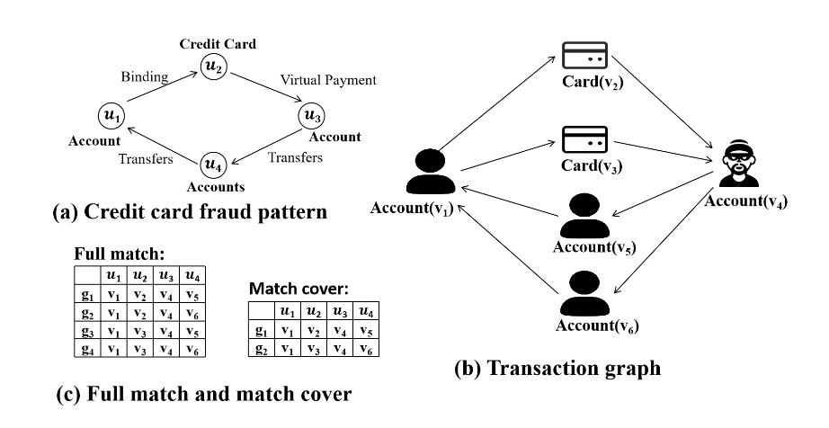
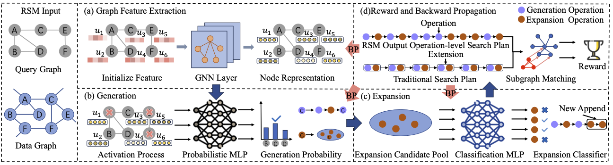
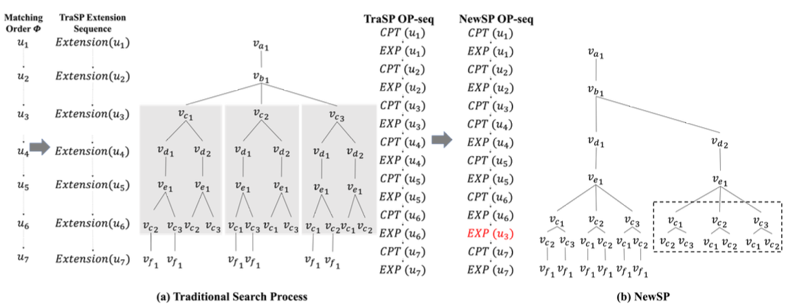
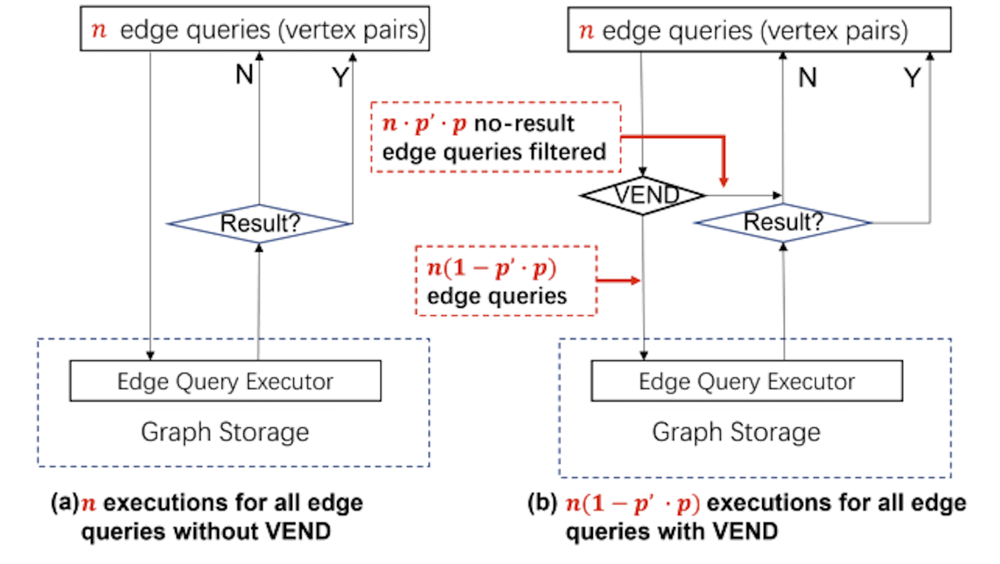

|
|
Ziming Li 李梓铭
M.S. student
College of Computer Science and Electronic Engineering
Hunan University
Email: liziming033@gmail.com
[GitHub]
|
Selected Publications
Below are my selected publications.
|
|

|
MatCo: Computing Match Cover of Subgraph Query over Graph Data
Zhichao Shi, Youhuan Li, Ziming Li, Yuequn Dou, Xionghu Zhong, Lei Zou.
International Conference on Management of Data (SIGMOD), 2025. Accepted(To appear).
code
/
paper
(Subgraph Match Cover) We propose a new problem to compute the match cover of a subgraph query.
We define the match cover as a subset of answers such that the vertices included are exactly the same as those in the entire set.
|
|

|
RSM: Reinforced Subgraph Matching Framework with Fine-grained Operation based Search Plan
Ziming Li, Yuequn Dou, Youhuan Li, Xinhuan Chen, Chuxu Zhang.
International Conference on Web Search and Data Mining (WSDM), 2025. Accepted(Oral).
code
/
paper
(RL Subgraph Matching) We propose a new search framework in machine learning subgraph matching and employ reinforced learning and gnn to generate search plan.
|
|

|
NewSP: A New Search Process for Continuous Subgraph Matching over Dynamic Graphs
Ziming Li, Youhuan Li, Xinhuan Chen, Lei Zou, Xiaofeng Yang, Yang Li, Hongbo Jiang.
International Conference on Data Engineering (ICDE), 2024.
code
/
paper
(Continuous Subgraph Matching) We propose a new search process in Continuous Subgraph Matching(CSM) problem with multi-expand, cache reuse and adaptive check strategies.
|
|

|
VEND: Vertex Encoding for Edge Nonexistence Determination
Youhuan Li, Hangyu Zheng, Lei Zou, Xiaosen Li, Ziming Li, Pin Xiao, Yangyu Tao, Zheng Qin.
International Conference on Data Engineering (ICDE), 2023.
code
/
paper
(Graph Query) We propose to design vertex encoding for determinations of no-result edge queries that should not be executed.
|
Services and Activities
Journal Reviewer:
ACM Transactions on Intelligent Systems and Technology (ACM TIST)
Conference Reviewer:
Resource-efficient Learning for the Web Conference (RelWeb@WWW 2025)
|
Selected Awards
National Scholarship of China for Graduate Student (研究生国家奖学金), 2024.
Tencent Hornbill Elite Talent Development Program (腾讯犀牛鸟精英人才), 2023.
First Prize, Academic Scholarship of Hunan University (湖南大学学业一等奖学金), 2022, 2023, 2024.
|
|